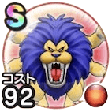

アームライオン
7章9話〜8章8話きあいためこころ最大コスト+4スキルの斬撃・体技ダメージ+10%ヒャド属性斬撃・体技ダメージ+10%幻惑耐性+10%怯え耐性+10% / 8.0点
くわしい特徴
【ランク特殊効果】 きあいためこころ最大コスト+4スキルの斬撃・体技ダメージ+10%ヒャド属性ダメージ+10%【晴れ】スキルの体技ダメージ+3%けもの系へのダメージ+5%幻惑耐性+10%怯え耐性+10%きあいためこころ最大コスト+4スキルの斬撃・体技ダメージ+10%ヒャド属性斬撃・体技ダメージ+10%幻惑耐性+10%怯え耐性+10%